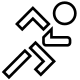
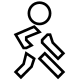
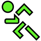
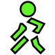

The 5km program is an exciting new way to start running. The 5km program is the equivalent of a metronome - it will tell you when to run and when to walk and for how long.
The 5km program is broken into 16 weeks of 3 run days. Each run day takes from 13 to 30 minutes. On the first day you will run and walk for 13 minutes only. But after a short while you will be out running and walking for longer and longer. Eventually, you will complete days consisting of pure running and at the end of the program you will be able to run for 5km without walking.
Each run day is made up of 1 or more activities - these varies between running and walking.
The idea is that you start by running day 1 on a monday, day 2 on the following wednesday and day 3 on the saturday here after. You should preferable complete 3 run days per week for a total of 16 weeks. Also, you must try to run days 1, 4, 7, ... on the same weekday. The same goes for days 2, 5, 8, ... and day 3, 6, 9, ...
See the following table for inspiration:
| Monday | Wednesday | Saturday | |
|---|---|---|---|
| Week 1 | 1 | 2 | 3 |
| Week 2 | 4 | 5 | 6 |
| Week 3 | 7 | 8 | 9 |
| Week 4 | 10 | 11 | 12 |
| Week 5 | 13 | 14 | 15 |
| Week 6 | 16 | 17 | 18 |
| Week 7 | 19 | 20 | 21 |
| Week 8 | 22 | 23 | 24 |
| Week 9 | 25 | 26 | 27 |
| Week 10 | 28 | 29 | 30 |
| Week 11 | 31 | 32 | 33 |
| Week 12 | 34 | 35 | 36 |
| Week 13 | 37 | 38 | 39 |
| Week 14 | 40 | 41 | 42 |
| Week 15 | 43 | 44 | 45 |
| Week 16 | 46 | 47 | 48 |
The 5km program tracks your progress giving your an idea about which run days you need to complete.
When you want to go for a run you simply start the 5km application and then the program shows you what activity to do. It will be either running or walking. The program will countdown and when it is time to change activity the program will make a sound and start the buzzer.
The first day looks like this:
|  |  | |
| 2:30 | 2:30 | 1:30 |
|  |  | |
| 1:30 | 2:30 | 2:30 |
Run for 2:30, walk for 2:30, run for 1:30, turn, run back for 1:30, walk for 2:30 and run for 2:30.
The green men tells you when it's time to run towards home.
This activity means that you must run in a steady pace. The speed must be so that you could have a conversation with a partner without losing your breath. A green man indicates it's time to run towards home.
This activity means that you must walk in a more up-beat tempo than what you normally would do. Do not run, though. Walk fast and keep up the pulse. A green man indicates it's time to walk towards home.
Running is over. Give yourself some credit, do some stretching and then hit the shower.